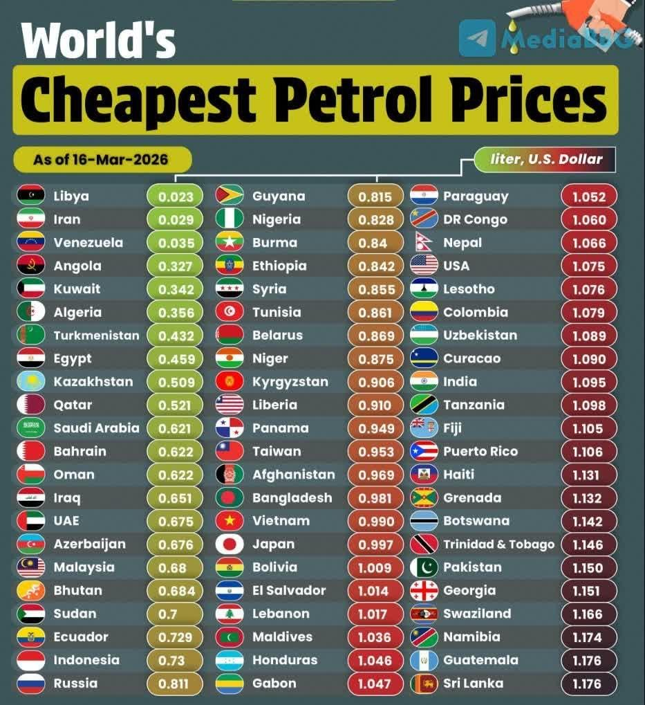

<!DOCTYPE html>
<!DOCTYPE html>
<html>
<head>
<meta charset="UTF-8">
<title>Дешёвый бензин в Казахстане: преимущество или ущерб экономической эффективности<title>
</head>

<body>

<h1>Дешёвый бензин в Казахстане: преимущество или ущерб экономической эффективности<h1>

<p> 24.03.2026</p>
  

  <!-- TITLE -->
  <div class="title">
    Дешёвый бензин в Казахстане: преимущество или ущерб экономической эффективности
  </div>

  <!-- SUBTITLE -->
  <div class="subtitle">
    В Европе, Японии и Южной Корее бензин стоит значительно дороже.
  </div>

  <!-- TEXT -->
  <div class="text">
    <p>Дешёвый бензин в Казахстане: преимущество или ущерб экономической эффективности  

В Европе, Японии и Южной Корее бензин стоит значительно дороже.

<p>Казахстан вошёл в

число стран с одними из самых низких цен на бензин в мире. По данным GlobalPetrolPrices, на 16 марта 2026 года стоимость бензина АИ-95 составляет около 0,51 доллара за литр – почти в три раза ниже среднемирового уровня в 1,37 доллара, передает BAQ.KZ.<p>

Однако за доступностью топлива стоит более сложная экономическая модель: дешёвый бензин – это не бесплатный ресурс, а результат регулирования и косвенных затрат, которые в долгосрочной перспективе могут снижать эффективность экономики и формировать зависимость от низких цен.

<p>Казахстан в группе стран с дешёвым топливом.<p>

В глобальном рейтинге Казахстан находится рядом с государствами, где топливо остаётся доступным благодаря ресурсной базе или субсидиям. Это Ливия, Иран, Венесуэла, а также Кувейт, Алжир, Туркменистан, Египет, Катар, Саудовская Аравия, Бахрейн и Оман.

Часть этих стран удерживает цены на минимальном уровне как элемент социальной политики. При этом в ряде случаев такая модель сопровождается структурными перекосами в экономике и высокой зависимостью от сырьевого сектора.

Казахстан в этом ряду выглядит более устойчиво, однако сама логика формирования цен остаётся схожей – значительную роль играет государственное регулирование.

<p>Дешёвый бензин и эффект иждивенчества.<p>

Экономисты отмечают, что длительное сохранение низких цен на ресурсы может формировать так называемое иждивенческое поведение.

Когда топливо остаётся дешёвым, у бизнеса и населения снижается стимул к повышению энергоэффективности, модернизации транспорта и оптимизации затрат. Возникает ощущение, что ресурс всегда будет доступен по низкой цене, хотя в реальности его стоимость лишь перераспределяется внутри экономики.

Именно поэтому в экономической теории действует простой принцип: ничего бесплатного не существует. Если потребитель платит меньше, значит, разницу покрывает государство, отрасль или будущие инвестиции.

<p>Где скрыты экономические издержки.<p>

Низкие цены на бензин создают ряд системных эффектов, которые не всегда заметны сразу.

Во-первых, это давление на бюджет и нефтеперерабатывающий сектор. Ограниченная маржинальность снижает возможности для модернизации и инвестиций.

Во-вторых, усиливается внутреннее потребление топлива. Это ведёт к росту нагрузки на дороги, увеличению выбросов и ускоренному износу инфраструктуры.

В-третьих, возникает ценовой разрыв с соседними странами, что стимулирует переток топлива за пределы страны – как в легальной, так и в теневой форме.

В долгосрочной перспективе такие факторы могут снижать общую эффективность экономики и создавать дополнительные расходы, которые не видны напрямую в цене бензина.

<p>Контраст с развитыми экономиками.<p>

В развитых странах ситуация противоположная. В Европе, Японии и Южной Корее бензин стоит значительно дороже – часто более 2–3 долларов за литр.

Это связано не с нехваткой ресурсов, а с осознанной политикой. Высокие цены формируются за счёт налогов, которые направляются на развитие инфраструктуры, экологические проекты и общественный транспорт.

Таким образом, дорогой бензин в развитых экономиках – это не проблема, а инструмент регулирования и устойчивого развития.

<p>Казахстан: между доступностью и реформами<p>

Для Казахстана низкие цены на топливо остаются важным социальным фактором. Они поддерживают население и снижают издержки бизнеса, особенно в логистике и сельском хозяйстве.

Однако одновременно перед страной стоит задача постепенно повышать эффективность отрасли. Это означает необходимость искать баланс между доступностью топлива и рыночными механизмами.

Эксперты отмечают, что сохранение текущей модели возможно в краткосрочной перспективе, но в долгосрочной потребуется более гибкий подход к ценообразованию.

Казахстан сегодня находится в числе стран с самым доступным бензином, что даёт ощутимые экономические преимущества.

Но дешёвое топливо – это не признак «дешёвой жизни», а результат сложной системы регулирования. И главный вызов – сделать так, чтобы это преимущество не превратилось в фактор снижения экономической эффективности, а стало основой для дальнейшего развития.  </div>

</div>

</body>
</html>
